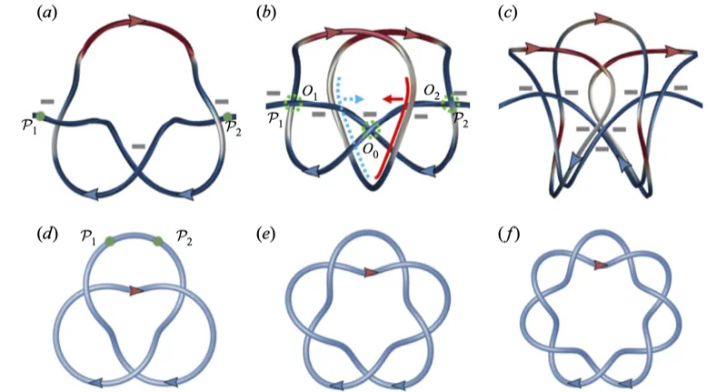

The study follows two perpendicular helical flux tubes with opposite chirality. Their evolution shows how initially unknotted magnetic structures can develop increasingly complex field-line topology.
研究追踪两个相互垂直、手性相反的螺旋磁通管，展示原本未打结的磁结构如何演化出越来越复杂的磁力线拓扑。
The interest lies in the sequence of events, not just the final knot. Following reconnection step by step reveals how one change in connectivity creates the conditions for the next.
研究关注的不只是最终的磁结，而是事件序列本身：逐次追踪重联，可以揭示一次连接关系的改变如何为下一次变化创造条件。
Following reconnection as it happens跟踪正在发生的磁重联
A magnetic-surface field tracks tube evolution and identifies reconnection regions. Initial reconnection creates U-shaped field lines; secondary reconnection ties overhand knots. Rotation and stretching induced through the Lorentz force then drive further reconnections, producing double overhand and more complex knots.
磁面场用于追踪磁通管并定位重联区域。初次重联形成 U 形磁力线，二次重联产生单结；通过洛伦兹力诱发的旋转与拉伸进一步推动重联，生成双结及更复杂的磁结。
A single reconnection is not enough to explain the final knot distribution. The first event changes how field lines approach one another; subsequent motion rearranges those lines and enables another event. The magnetic-surface representation makes this sequence traceable. Tracking both the knot type and the surrounding motion reveals how the field’s geometry changes the flow that will reshape that geometry in the next stage.
单次重联不足以解释最终结型分布。第一次事件改变磁力线相互接近的方式，后续运动重新排列它们并促成新的事件。磁面表示使这一过程可追踪；同时跟踪结型和周围运动，就能看到磁场几何如何改变流动，而流动又如何在下一阶段重塑几何。
{kind=link}

Tracking magnetic surfaces and field lines追踪磁曲面与磁力线
The analysis follows field lines through successive reconnection events instead of relying only on snapshots of magnetic intensity. A magnetic-surface field identifies evolving tube boundaries and reconnection regions. Knot types extracted at different times are compared using crossing number and Alexander–Briggs classification, while energy conversion is tracked alongside the geometric sequence. This links the visual formation of a knot to a quantitative change in topology.
分析沿连续重联事件跟踪磁力线，而不只依赖磁场强度快照。磁面场用于识别演化中的管边界与重联区域；不同时刻的结型通过交叉数和 Alexander–Briggs 分类比较，同时跟踪能量转换，将视觉上的成结过程对应到可量化的拓扑变化。
A cascade toward more complex knots通向复杂磁结的级联
The analysis quantifies increasing complexity using minimum crossing numbers and distributions of knot types. Knot formation coincides with conversion of magnetic energy into kinetic energy, and the cascade eventually slows and stops under resistive and viscous dissipation. The work makes a sequence of topological changes visible and measurable, linking geometry to the underlying dynamics.
分析利用最小交叉数和结类型的分布刻画复杂度的增加。磁结形成伴随着磁能向动能的转化，而电阻与黏性耗散最终使级联减缓并停止。这项工作将连续的拓扑变化变得可观察、可量化，并与其动力学机制联系起来。
Topology can become more complicated拓扑也可能变得更复杂
The cascade is notable because complexity grows from an initially unknotted configuration. Lorentz-force-driven motion participates in the next reconnection, closing a feedback between geometry and dynamics. Dissipation eventually ends that sequence. This is a specific magnetic-knot mechanism in the studied resistive flow, not a claim that all reconnection events increase knot complexity.
这一级联的特点是复杂性从初始无结配置中增长。洛伦兹力引起的运动参与后续重联，使几何与动力学形成反馈，而耗散最终终止这一过程。这是所研究电阻性流动中的磁结机制，并不意味着所有重联都会增加结的复杂度。
Paper & authors论文与作者
Magnetic knot cascade via the stepwise reconnection of helical flux tubes ↗
Cite this work
@article{Hao_2021,
title = {Magnetic knot cascade via the stepwise reconnection of helical flux tubes},
volume = {912},
ISSN = {1469-7645},
url = {http://dx.doi.org/10.1017/jfm.2020.1145},
DOI = {10.1017/jfm.2020.1145},
journal = {Journal of Fluid Mechanics},
publisher = {Cambridge University Press (CUP)},
author = {Hao, Jinhua
and Yang, Yue},
year = {2021},
month = Feb
}